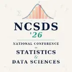

1956
Dartmouth workshop
AI is named. The field begins with logic and search.
How we got to large language models — LLMs. How "knowledge graphs" and "ontologies" are learning to live inside them — and why that changes everything.


Symbolists & connectionists (neural networks) have argued about the nature of intelligence for seventy years. Today, for the first time, they have to collaborate.
Beautifully explainable — you could read the rules. But every edge case had to be written by hand, and the world had too many edges.
What the symbolic tradition couldn’t do — see, hear, translate, converse — the neural tradition did, and decisively.
An LLM learns what words tend to follow what words. It does not, in any strong sense, know what a patient, a contract, or a regulation is.
Knowledge graphs and ontologies — the unfashionable cousins of machine learning — are suddenly the hottest technology in enterprise AI.
Structured human knowledge — domain rules, knowledge graphs, physical laws — fed directly into statistical ML.
Different domains, different metrics — same direction. Structure doesn't replace the model; it makes the model accountable.
Real systems combine all three. The architecture is a pipeline, not a swap.
Generative AI is powerful and accessible — and it needs control. Knowledge graphs and symbolic reasoning provide that grounding. The future of AI is not neural, it is not symbolic. It is both.